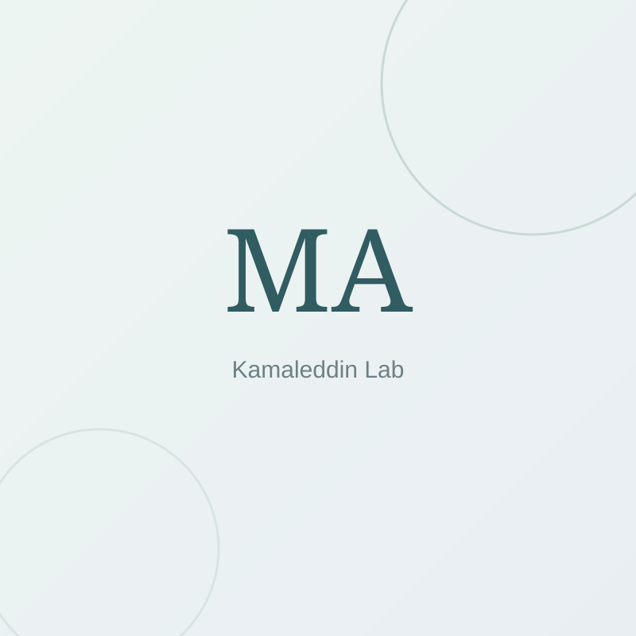
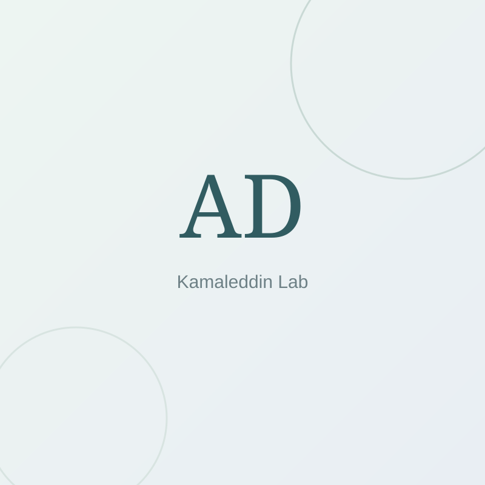
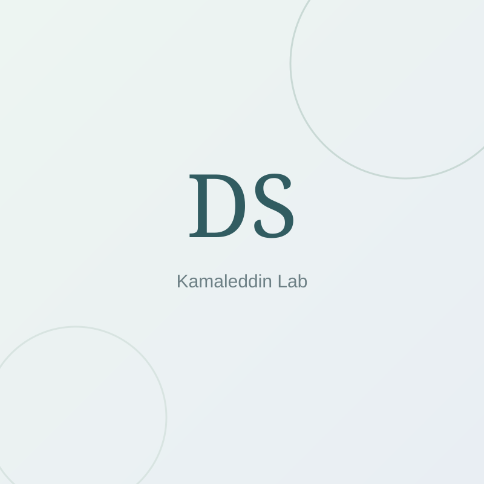
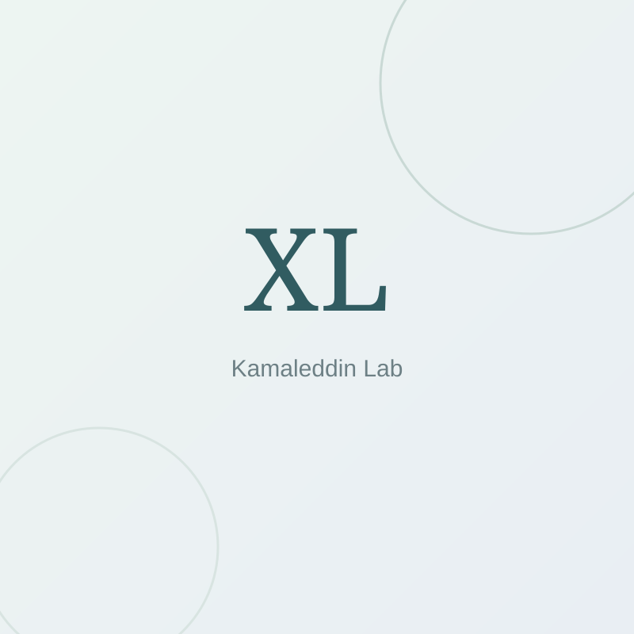
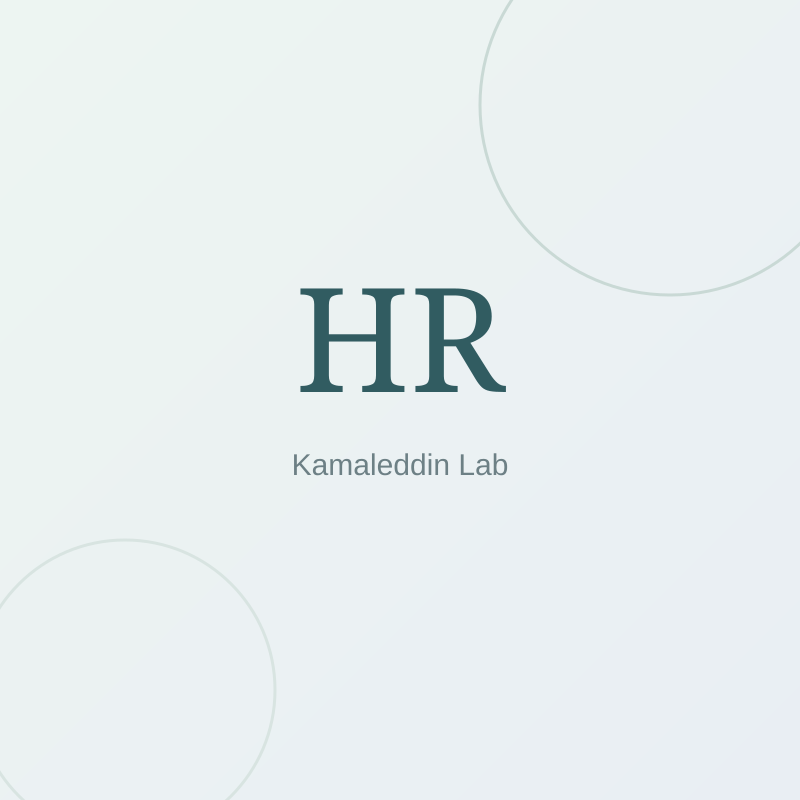

People
A research group built around shared questions.
Trainees work across AI, psychiatry, epidemiology, neuroscience, and engineering, with projects designed to create real ownership of scientific questions and methods.
Lab lead & current trainees
Current group.
Current supervised trainees and the principal investigator.

Erzheng Zhang
Undergraduate Researcher

Zachary Korte
Undergraduate Researcher

Karthika Baiju
Undergraduate Researcher

Ming Xuan Yue
Undergraduate Researcher
LinkedIn profile images are resolved from public professional profiles where identity can be matched confidently. Avatars provided by Unavatar.
Mentorship network
Previous supervised trainees.
Research staff, visiting researchers, MSc trainees, and undergraduate researchers who have worked under Kamaleddin’s supervision.

Maryam Ashktorab
Research staff / scientific associate

Anne Rose De Kort
Visiting PhD researcher

Devanshi Shah
MSc trainee

Xiaoyang Liu
BSc trainee

Hoorya Rafiq
BSc trainee
Question first
Projects begin with a scientific or clinical claim that can be tested.
Cross-disciplinary
Clinical, engineering, statistical, and neuroscience perspectives shape the work together.
Reproducible
Code, prompts, transformations, evaluation choices, and limitations should be inspectable.